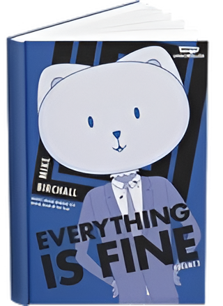

hey there, it's shreya
i’m a full-stack developer, designer, and tinkerer studying computer science + math @ university of toronto! i thrive on turning complex challenges into elegant solutions, and my work is influenced as much by my design and creativity as it is my logic and strategy.
when i'm not building you'll probably find me binging sci-fi thrillers, finding new music, or immersed in a magic-filled book many worlds away! i also enjoy baking treats to fuel long nights, taking bike rides to spark ideas, or sketching little designs that might one day inspire my next project!
a look into my build process
i. gather
(the pre-build)
i prioritize understanding the problem space by:
- gathering requirements
- identifying constraints
- gaining context
ii. seed
(plan + design)
i translate requirements into structured plans and system designs that guide implementation decisions
iii. sprout
(the build)
i implement features in iterations, collaborate regularly, validate assumptions early, and adapt as the system grows
iv. reflect
(analyze + rework)
i review and improve products by:
- analyzing tradeoffs
- refining past decisions
- comparing outcomes against goals
v. evolve
(deploy + improve)
i prepare projects for deployment while planning enhancements, monitoring risks, and anticipating future requirements
some of my favourite stories


